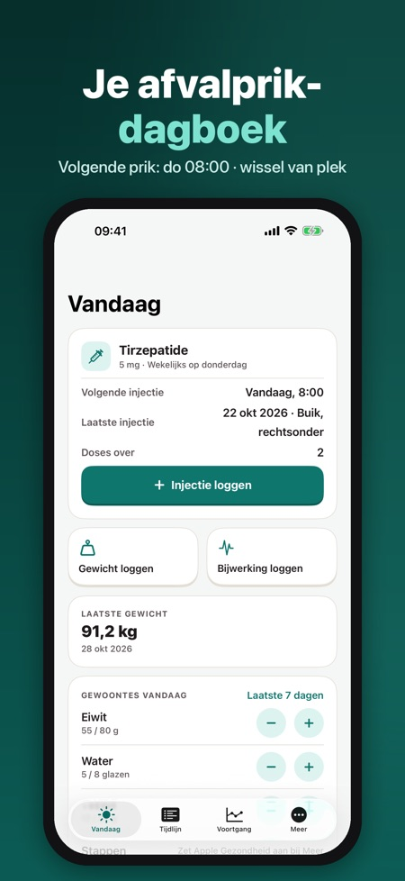
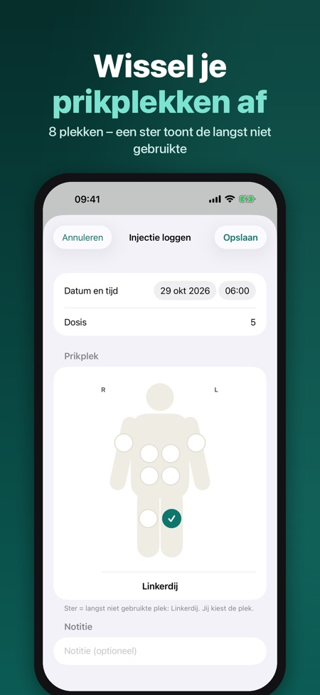
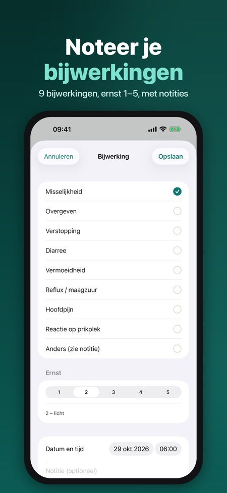

Injecties, gewicht, bijwerking. Een rustig, privé dagboek voor je wekelijkse of dagelijkse GLP-1-injecties: prikplekken, gewicht, bijwerkingen en een PDF-rapport voor je arts.



Een privé dagboek voor mensen die GLP-1-medicatie van hun arts gebruiken. Log elke injectie, wissel je prikplekken af, volg je gewicht en noteer bijwerkingen – en deel een duidelijk PDF-rapport met je arts.
INJECTIELOG
• Wekelijks of dagelijks schema, met de dosis die je arts heeft bepaald
• Lichaamskaart met 8 prikplekken (buik in vier kwadranten, dijen, bovenarmen); een ster toont de plek die je het langst niet hebt gebruikt
• Doses over in je pennen, met op tijd een herinnering voor een nieuwe pen of een nieuw recept
HERINNERINGEN
• Injectieherinnering op jouw dag en tijd
• Meldingen op het vergrendelscherm tonen nooit een medicijnnaam of dosis
GEWICHT EN GEWOONTES
• Gewicht en taille met grafiek en je streefgewicht
• Dagelijkse tellers voor eiwit, water en vezels, plus stappen uit Apple Gezondheid
BIJWERKINGEN
• Misselijkheid, overgeven, verstopping, diarree, vermoeidheid, reflux, hoofdpijn, reactie op de prikplek of anders, ernst 1–5 en notities
• Zichtbaar op de tijdlijn naast je injecties
RAPPORT VOOR DE ARTS
• PDF voor elke periode: doses, gewichten en een overzicht van bijwerkingen, in de taal van de app
PRIVÉ
Geen account. Je dagboek blijft op je iPhone (en alleen in Apple Gezondheid als je dat aanzet). Je gezondheidsgegevens worden nergens heen gestuurd; alleen anonieme gebruiksstatistieken, die je kunt uitzetten. Geen advertenties, geen tracking. Optioneel vergrendelen met Face ID.
PRO
Pro (jaarabonnement of eenmalig levenslang) geeft je de volledige geschiedenis en grafieken, trends in bijwerkingen, het PDF-rapport, koppeling met Apple Gezondheid en meerdere medicijnen. Zonder Pro houd je de injectielog, herinneringen en de laatste 30 dagen gewicht.
De medicijnlijst bevat Wegovy®, Ozempic®, Mounjaro®, Saxenda®, Trulicity® en Victoza® met hun sterktes uit de EMA-productinformatie, alleen zodat je het jouwe kunt kiezen. De app is een dagboek: geen doseeradvies, geen advies over ophogen, geen schatting van de medicijnspiegel en geen diagnose. Volg altijd de instructies van je arts. Niet verbonden aan een fabrikant; merknamen zijn van hun eigenaars.